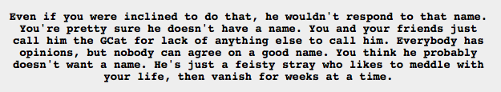
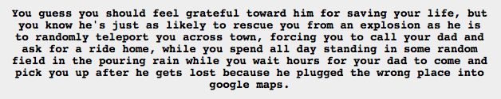

Yep, that sounds exactly like what would happen if a kitty was all-powerful. That and all of the cans would be open, forever.
GCat makes it sound like Google made it. Which makes sense, if nyone is going to make an omnipotent cat, it would be Google. One of their employees is probably doing just that as a side project right now.